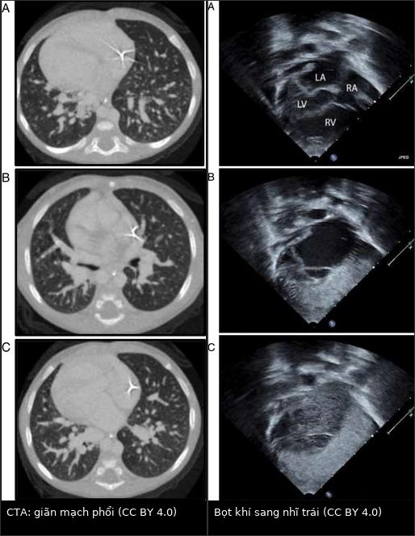
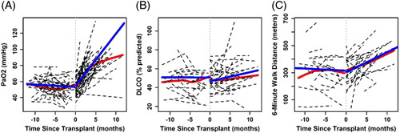
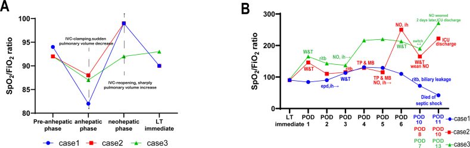

196 — HPS tồn tại dai dẳng sau ghép gan (persistent/residual hepatopulmonary syndrome)
Tags: pattern:shunt-phai-trai pattern:gian-mach-trong-phoi pattern:giai-bao-hoa-sau-ghep pattern:giam-oxy-mau vung:gan vung:phoi score:HPS protocol:SA-tim-tuong-phan protocol:MAA protocol:CTPA-phoi
Mức chắc chắn (certainty): tổng hợp y văn (literature synthesis) — 1 phân tích gộp 22 nghiên cứu về ghép gan ở HPS (JHEP Rep 2026, PMC12800508), 2 đoàn hệ Bắc Mỹ (Hepatology 2024, PMC10871618; J Clin Exp Hepatol 2026, PMC12569822), 1 loạt 3 ca có biến chứng giảm oxy máu nặng quanh mổ kèm ảnh đồ thị (PMC11771250), 1 bài tổng quan cơ chế (PMC13039249) và 1 ca nguyên văn có ảnh CTA + siêu âm tim cản quang (PMC4295258). Không có thử nghiệm ngẫu nhiên; mọi ngưỡng xử trí là tổng hợp thực hành, chỗ suy luận được ghi rõ.
Câu chốt: ghép gan chữa khỏi HPS ở phần lớn bệnh nhân — nhưng KHÔNG chữa ngay. PaO₂ chỉ tăng +6,5 mmHg/tháng trong năm đầu, trung vị 149 ngày mới bình thường hoá, và ~12% bệnh nhân có giảm oxy máu kháng trị quanh mổ (pRH) dù mảnh ghép hoạt động tốt (PMC10871618; PMC11771250). Vì vậy câu hỏi lâm sàng của bài này không phải "có HPS không" (đã có bài 186) mà là: "giảm oxy ở ngày hậu phẫu thứ mấy, shunt còn bao nhiêu %, và đây là quán tính hồi phục bình thường hay một nguyên nhân mới?"
1. Tổng quan bệnh học – cơ chế hình ảnh (TẠI SAO)
1.1 Vì sao phải mất hàng tháng mới hết khó thở
- HPS là giãn mạch trong phổi (intrapulmonary vascular dilatation, IPVD) do gan bệnh: endotoxin từ ruột → iNOS/eNOS, NO, CO tăng; ET-1 qua thụ thể ET-B → giãn mao mạch + tăng sinh mạch (PMC13039249). Mao mạch phổi bình thường 8–15 µm; trong HPS giãn tới hàng trăm µm, làm khoảng khuếch tán khí–hồng cầu tăng và tạo shunt phải–trái chức năng.
- Ghép gan cắt nguồn tín hiệu gan (endotoxin, cytokin) nhưng không "thu nhỏ" ngay các mao mạch đã tái cấu trúc. Đoàn hệ 132 bệnh nhân cho thấy quán tính này rất rõ: sau ghép, PaO₂ tăng +6,5 mmHg/tháng (KTC 95%: 5,3–7,7), trung vị 149 ngày (116–184) để PaO₂ trở về bình thường, và thời gian bình thường hoá không khác nhau theo độ nặng trước ghép — trung bình 138 ngày (HPS trung bình), 150 ngày (nặng), 155 ngày (rất nặng), p = 0,5 (PMC10871618). Đây là lý do vật lý khiến bệnh nhân vẫn tím sau một mảnh ghép tốt.
- Trước ghép, oxy máu xấu đi từ từ: −3,7 mmHg/năm (KTC 95%: −6,4 đến −0,96); hai lớp diễn tiến được mô tả: "bệnh rất nặng, giảm chậm" (PaO₂ 45,0 mmHg; −1,0 mmHg/năm) và "bệnh trung bình, giảm đều" (PaO₂ 65,5 mmHg; −2,5 mmHg/năm) (PMC10871618). Ngược trực giác: shunt ≥ 20% dự báo PaO₂ giảm CHẬM hơn 0,88 mmHg/tháng — shunt lớn không đồng nghĩa xấu đi nhanh.
1.2 Bốn phép đo và ngưỡng định lượng nằm lòng
| Phép đo | Ngưỡng bất thường | Ý nghĩa vật lý | Nguồn |
|---|---|---|---|
| Khí máu động mạch (tư thế ngồi/đứng) | PaO₂ < 80 mmHg, **gradient A–a ≥ 15 mmHg** (≥ 20 mmHg nếu > 64 tuổi) | khuếch tán + V/Q mismatch | PMC10871618 |
| Siêu âm tim cản quang (bubble study) | bọt khí > 10 µm vào nhĩ trái trong 3–6 chu chuyển tim sau khi đầy nhĩ phải | mao mạch giãn cho bọt lọt qua | PMC4295258 |
| ⁹⁹ᵐTc-MAA (macroaggregated albumin) | shunt > 6% (giả định 13% cung lượng tim lên não) | hạt bị giữ ở mao mạch; hạt lọt lên não = shunt phải–trái | PMC10871618 |
| Orthodeoxia | PaO₂ giảm > 4 mmHg khi từ nằm sang ngồi/đứng | tưới máu dồn về đáy phổi nơi giãn mạch nhiều nhất | PMC10871618 |
- Bubble study là phép đo tại giường, không cần thuốc cản quang thật: microbubble sinh ra bằng cách lắc muối sinh lý; bình thường bị giữ ở mao mạch phổi. Xuất hiện bọt ở nhĩ trái sau 3–6 chu chuyển = shunt TRONG PHỔI; xuất hiện sớm hơn (≤ 3 chu chuyển) = shunt TRONG TIM (PFO/ASD) và phải loại trừ trước khi quy kết HPS (PMC4295258; đối chiếu bài 186).
- Vì sao MAA không thay thế bubble study: MAA định lượng được shunt nhưng không định vị được trong tim hay trong phổi → bubble study vẫn là bước đầu; MAA dùng để theo dõi mức shunt (ca thực tế 55% và 56% trước ghép) (PMC10871618; PMC11771250).
1.3 Vì sao "quanh mổ" lại là cửa tử
- Giảm oxy máu kháng trị quanh mổ (perioperative refractory hypoxaemia, pRH) gặp ở ~12% bệnh nhân HPS được ghép gan, định nghĩa SpO₂ không giữ được > 88% dù thở FiO₂ 100% (PMC11771250).
- Cơ chế là V/Q mismatch bị khuếch đại bởi chính cuộc mổ, không phải shunt mới: kẹp tĩnh mạch chủ dưới làm giảm đột ngột tưới máu phổi → SpO₂ tụt; mở lại tuần hoàn → SpO₂ tăng vọt (thấy rõ trên đồ thị theo dõi trong mổ), rồi tụt lại từ POD1 khi bệnh nhân nằm ngửa, thừa dịch, xẹp phổi đáy (PMC11771250).
- Vì sao thuốc co mạch dạng hít thất bại: mạch giãn tập trung ở vùng lưng/đáy phổi — nơi thông khí kém nhất khi nằm; khí dung chỉ vào vùng trên/thông khí tốt → co mạch nhầm chỗ, không cải thiện shunt (PMC11771250). Đây là lý do ephedrine khí dung 15 mg/5 mL × 4 lần/ngày chỉ nâng SpO₂ tạm thời ở ca 1, còn NO hít (20 ppm) nâng SpO₂ từ 88% lên 100% trong 30 phút ở ca 2 — vì NO đi theo khí tới đúng vùng có thông khí và tái phân bố tưới máu sang vùng thông khí tốt.
1.4 Số liệu kết cục (để tư vấn gia đình, không phải để hứa)
- Tần suất: HPS gặp ở 17,2% (11,6–24,7%; n = 1.171) bệnh nhân xơ gan được đánh giá ghép gan, 26,1% (18,5–35,5%; n = 629) ở nhóm tăng áp cửa, và 21,6% (11,2–37,4%; n = 737) ở chính người nhận ghép (PMC12800508).
- Tử vong trên danh sách chờ: 13,1% (0,6–78,5%; n = 1.240) dưới chính sách điểm ưu tiên MELD hiện hành (PMC12800508).
- Sau ghép: sống 1 năm 85,5% (nghiên cứu tiến cứu, n = 240), 93,9% (thời kỳ hậu MELD, n = 99), 83,8% (dữ liệu registry, n = 800); sống 5 năm 85% / 92,9% / 76% (n = 144 / 99 / 739) (PMC12800508). Đoàn hệ Canada 53 ca: tử vong 7,5% / 17% / 48% ở 1 / 5 / 10 năm, và oxy máu bình thường hoá ở 46/47 ca (97,9%) tại 6 tháng (PMC12569822).
- Hồi phục HPS: > 80% trong 3 tháng, 90,1% (71,7–97,0%; n = 80) tại 6 tháng, gần như tất cả trong 1 năm (PMC12800508).
- Dự báo tử vong sau ghép: PaO₂ trước ghép ≤ 50 mmHg + shunt ≥ 20% là cặp dự báo tốt nhất (độ nhạy 86%, độ đặc hiệu 88%); mỗi mmHg PaO₂ tăng thêm làm HR tử vong 0,93 (0,87–0,99), còn bệnh phổi tắc nghẽn đi kèm làm HR 6,96 (1,29–37,43) (PMC12800508; PMC12569822).
2. Mẫu hình + chẩn đoán phân biệt theo trục THỜI GIAN (Gamut)
Khác mọi gamut "theo vị trí", bài này phân biệt theo ngày hậu phẫu — vì cùng một triệu chứng, nguyên nhân đổi hoàn toàn sau 1 tuần, 1 tháng, 1 năm.
- POD 0–3 — "còn shunt hay tụt vì thứ khác": pRH/giãn mạch tồn tại (đáy phổi, orthodeoxia), xẹp phổi đáy + tràn dịch màng phổi, phù phổi do thừa dịch, hít sặc, thuyên tắc phổi, nhiễm khuẩn huyết/ARDS, thiếu máu – giảm cung.
- Tuần 1 – tháng 6 — "hồi phục chậm, đừng vội kết luận": quán tính hồi phục bình thường (+6,5 mmHg/tháng), viêm phổi do CMV/Pneumocystis, viêm phổi do thuốc ức chế miễn dịch (sirolimus/everolimus), liệt cơ hoành, suy mảnh ghép.
- Tháng 6 – 1 năm — "vẫn còn giảm oxy": HPS tồn tại thật sự, PoPH mới xuất hiện (bài 186), hẹp/tắc shunt cửa–chủ còn lại (bài 176), huyết khối tĩnh mạch gan, hẹp đường mật tái phát gây xơ gan mảnh ghép.
- Gợi nhớ nội bộ (nhóm tự đặt, không phải mnemonic y văn) — "SHUNT": Shunt tồn tại (HPS), Hypoventilation/xẹp phổi, Uứ dịch (phù phổi, tràn dịch), Nhiễm trùng (phổi, huyết), Thuyên tắc phổi/PoPH.
- Phân biệt theo cơ chế (3 tầng sinh lý): (1) shunt thật — đáp ứng oxy kém, bubble/MAA dương; (2) mismatch V/Q — đáp ứng oxy trung bình, CT có xẹp/đông đặc; (3) rối loạn khuếch tán — DLCO giảm, CT phổi "sạch".
3. Bảng so sánh phân biệt (ma trận đối chiếu)
| Thực thể (entity) | Hình ảnh/đo lường điển hình | Chốt vào (rule-in) | Chốt loại (rule-out) | Gợi ý xác nhận |
|---|---|---|---|---|
| HPS tồn tại/giải quyết chậm | CT phổi sạch hoặc giãn mạch nhẹ; bubble study còn dương; PaO₂ tăng chậm ~6,5 mmHg/tháng | Bubble dương + CT không có tổn thương mới + PaO₂ tăng dần theo tháng | PaO₂ tụt nhanh trong vài giờ kèm sốt, đông đặc, tràn dịch mới → không phải quán tính | Khí máu + A–a mỗi 3–6 tháng; MAA định lượng lại; CEUS khi nghi shunt mới |
| pRH quanh mổ (V/Q mismatch) | SpO₂ < 88% dù FiO₂ 100%; X-quang/CT thường không có đông đặc; tụt từ POD1 | Tụt sau khi rút ống, nằm ngửa, thừa dịch; đáp ứng NO hít trong 30 phút | Đáp ứng hoàn toàn với nghiệm pháp Trendelenburg đơn thuần thì chỉ là thành phần tư thế, không đủ giải thích | Theo dõi SpO₂/FiO₂, thử NO hít, siêu âm phổi tìm xẹp đáy |
| PoPH (tăng áp phổi do tăng áp cửa) | Thân ĐM phổi giãn; thất phải giãn; không có shunt khi bubble sớm | mPAP và PVR tăng trên thông tim phải; bubble âm tính hoặc dương muộn | Bubble dương sớm ≤ 3 chu chuyển → shunt trong tim, không phải PoPH | Siêu âm tim ước tính PAP rồi thông tim phải trước khi kết luận |
| Xẹp phổi/tràn dịch hậu phẫu | Đáy phổi mờ, mất thể tích, di lệch rãnh liên thuỳ; siêu âm phổi có dấu phổi bị đè | Tổn thương khu trú đáy + cải thiện khi ngồi dậy/vỗ rung | CT phổi hoàn toàn sạch mà vẫn tím → nghĩ shunt | X-quang/CT ngực, siêu âm phổi tại giường |
| Viêm phổi/hít sặc | Đông đặc khu trú, có thể mức khí–phế quản; sốt, tăng bạch cầu | Đông đặc mới + sốt + đờm | Đông đặc mờ nhạt mà PaO₂ thấp không tương xứng → nghĩ shunt | Cấy đờm, BAL, kháng sinh theo kinh nghiệm |
| Thuyên tắc phổi | CTPA: khuyết đầy trong ĐM phổi; thất phải giãn | Khuyết đầy trên CTPA + D-dimer | CTPA âm tính chất lượng tốt + không tăng áp phổi | CTPA; đối chiếu liều kháng đông dự phòng |
| Shunt trong tim (PFO/ASD) | Bubble vào nhĩ trái ≤ 3 chu chuyển; có thể thấy dòng qua vách trên siêu âm | Bọt xuất hiện sớm, đồng thời với đầy nhĩ phải | Bọt chỉ xuất hiện sau 3–6 chu chuyển → đường vào là phổi | Siêu âm tim TEE, nghiệm pháp Valsalva |
| Dị dạng động–tĩnh mạch phổi khu trú | Nốt mạch + mạch nuôi/mạch dẫn trên CTA; shunt khu trú, không lan toả | CTA thấy nốt mạch nối ĐM–TM; đáp ứng oxy rất kém | Giãn mạch lan toả đối xứng đáy phổi → HPS, không phải AVM | CTA mạch phổi; cân nhắc nút mạch nếu AVM lớn |

Trái (A–C): CTA ngực trẻ 8 tháng — giãn mạch phổi lan toả, rõ hơn ở các lát thấp sát đáy, không có nốt mạch khu trú. Phải (A–C): siêu âm tim cản quang cùng ca — bọt khí chỉ xuất hiện ở nhĩ trái sau vài chu chuyển, tức shunt TRONG PHỔI. Nguồn: Govindan ML và cs., J Med Case Rep 2014, CC BY 4.0 (PMC4295258); ảnh ghép letterbox, giữ tỉ lệ.4. Protocol chụp/đo + hệ phân độ + sơ đồ xử trí
4.1 Trước ghép — bộ 4 phép đo tối thiểu
- Khí máu động mạch ở tư thế ngồi hoặc đứng (không nằm): PaO₂ + gradient A–a; ghi rõ FiO₂. Ngưỡng chẩn đoán: PaO₂ < 80 mmHg**, **A–a ≥ 15 mmHg** (**≥ 20 mmHg nếu > 64 tuổi) (PMC10871618).
- Siêu âm tim cản quang với muối lắc (bubble study) — bước đầu tay; ghi số chu chuyển bọt xuất hiện ở nhĩ trái (3–6 = trong phổi, ≤ 3 = trong tim) (PMC4295258).
- ⁹⁹ᵐTc-MAA khi cần định lượng shunt (ngưỡng > 6%) và theo dõi diễn tiến; ca thực tế 55% và 56% trước ghép (PMC10871618; PMC11771250).
- CT ngực/CTA + siêu âm tim ước tính áp lực phổi: để loại trừ bệnh phổi kèm theo và PoPH (nếu nghi PoPH → thông tim phải, bài 186).
4.2 Phân độ HPS theo PaO₂ (khí trời) và hệ quả
| Độ | PaO₂ | Ý nghĩa thực hành |
|---|---|---|
| Nhẹ | ≥ 80 mmHg | thường không triệu chứng; theo dõi |
| Trung bình | 60–79 mmHg | bắt đầu theo dõi sát, đo orthodeoxia |
| Nặng | 50–59 mmHg | ngưỡng được hưởng điểm ưu tiên MELD (PaO₂ < 60 mmHg) |
| Rất nặng | < 50 mmHg | tăng nguy cơ tử vong sau ghép; cân nhắc PaO₂ ≤ 50 mmHg + shunt ≥ 20% khi tư vấn tiên lượng |
(Phân độ và ngưỡng MELD theo PMC10871618; cặp dự báo tử vong theo PMC12800508.)
4.3 Sau ghép — theo dõi có nhịp
- Khí máu + DLCO + 6MWD mỗi 3–6 tháng (đúng lịch các đoàn hệ đã dùng), đo ở tư thế ngồi; đích "bình thường hoá" là PaO₂ ≥ 80 mmHg, DLCO ≥ 75% dự đoán, 6MWD về giới hạn bình thường (PMC10871618).
- Không chụp lại CTA thường quy nếu bệnh nhân hồi phục đúng quán tính; chỉ chụp khi có mốc bất thường (tụt nhanh, sốt, đau ngực, thất phải giãn).
- Bubble study lặp lại có ích: ca trẻ 6 tuổi vẫn còn shunt rõ trên siêu âm cản quang ở POD1 dù CT phổi sạch, và giảm đáng kể ở 6 tháng sau ghép (PMC11771250).
4.4 Sơ đồ xử trí giảm oxy máu sau ghép gan
flowchart TD
A[Ghep gan + giam oxy mau] --> B{SpO2 duoi 88 phan tram voi FiO2 100 phan tram}
B -->|Khong| C[Theo doi quy tang: khi mau A-a moi 3 den 6 thang]
B -->|Co| D[Chan doan hinh anh: X quang hoac CT nguc + sieu am phoi tai giuong]
D --> E{Co dong dac, xep phoi, tran dich moi}
E -->|Co| F[Dieu tri nguyen nhan: vap rung, dan luu, khang sinh]
E -->|Khong| G[Bubble study lap lai + sieu am tim uoc tinh ap luc phoi]
G --> H{Bot vao nhi trai trong 3 den 6 chu chuyen}
H -->|Khong| I[Tim nguyen nhan khac: thuyen tac phoi, PoPH, thuoc uc che mien dich]
H -->|Co| J[Shunt noi phoi ton tai hoac nang them]
J --> K[Thu NO hit 20 ppm trong 30 phut]
K -->|Dap ung| L[Duy tri NO hit, giam dan, tranh thua dich]
K -->|Khong dap ung| M[Do lai MAA, CTPA, thong tim phai neu nghi PoPH]
L --> N[Danh gia lai moi 3 den 6 thang: PaO2, DLCO, 6MWD]
4.5 Các liệu pháp "cứu" đã được báo cáo (bằng chứng ca, không phải RCT)
| Liệu pháp | Liều trong báo cáo | Kết quả thực tế |
|---|---|---|
| NO hít (iNO) | 20 ppm, giảm dần tới 13 ppm | SpO₂ 88% → 100% trong 30 phút; nước tiểu 5–15 mL/giờ → 110–160 mL/giờ (ca 2) |
| Ephedrine khí dung | 15 mg/5 mL, 4 lần/ngày | SpO₂ 83–85% → 90% tạm thời, PaO₂/FiO₂ không đổi (ca 1) |
| Xanh methylene IV | 3 mg/kg | Không hiệu quả, CVP tăng 3–5 mmHg (ca 2) |
| Tư thế Trendelenburg | lặp lại nhiều lần | tăng SpO₂ thoáng qua |
(Toàn bộ số liệu bảng này từ PMC11771250 — 3 ca, không có nhóm chứng; dùng như gợi ý khi đường thở đã tối ưu, không phải phác đồ chuẩn.)
5. Biến thể bình thường và cạm bẫy
- Bubble study dương KHÔNG đồng nghĩa HPS: xơ gan có IPVD nhưng PaO₂ và A–a bình thường thì chưa đủ tiêu chuẩn HPS — phải đủ cả 3: bệnh gan, IPVD, giảm oxy máu.
- Đừng quy mọi giảm oxy sau ghép cho "HPS tồn tại": ca 2 tụt PaO₂ xuống 47 mmHg, A–a 378 mmHg mà không có viêm phổi, phù phổi hay tràn dịch trên hình ảnh — hình ảnh sạch ủng hộ shunt, nhưng vẫn phải loại trừ thuyên tắc phổi và nhiễm khuẩn bằng dữ liệu khác (PMC11771250).
- CT phổi bình thường không loại trừ shunt: ca trẻ 6 tuổi vẫn shunt nặng với CT ngực sạch hoàn toàn; ngược lại CTA có thể chỉ thấy giãn mạch lan toả rất khó định lượng — đừng đo "đường kính mạch" để chẩn đoán.
- Giãn thân ĐM phổi trên CTA không phải bằng chứng PoPH: phải có mPAP/PVR trên thông tim phải; và HPS với PoPH có thể cùng tồn tại, nên bubble dương không loại trừ PoPH.
- Shunt trong tim là bẫy chết người: nếu bọt xuất hiện ≤ 3 chu chuyển, "chữa HPS" bằng ghép gan sẽ không cải thiện oxy vì đường rò nằm ở tim — cần TEE và đóng lỗ.
- Đừng hứa "mổ xong hết tím": quán tính 149 ngày và 12% pRH là hai con số phải nói trước với gia đình; ca trẻ 8 tháng còn phải mở khí quản và thở máy kéo dài sau ghép dù ghép thành công (PMC4295258).
- Sai lầm tư thế: đo khí máu khi nằm ngửa sẽ che mất orthodeoxia và làm nhẹ giả gradient A–a — luôn ghi tư thế.
6. Tự lượng giá — Blind Quiz
Ca 1 — Trẻ 8 tháng, vàng da từ nhỏ, tím tăng dần, SpO₂ 70% khí trời.
- Gợi ý lâm sàng: bệnh gan mật bẩm sinh đã mổ, tim lệch phải, tĩnh mạch chủ dưới bị gián đoạn.
- Câu hỏi: mô tả 2 dấu hiệu trên CTA và trên siêu âm cản quang; 3 chẩn đoán phân biệt; dấu hiệu nào chốt shunt trong phổi thay vì trong tim?
Bấm để hiện đáp án (findings + chẩn đoán)
- Dấu hiệu: CTA — giãn mạch phổi lan toả, rõ hơn ở các lát thấp sát đáy, không có nốt mạch khu trú, tim lệch phải. Siêu âm cản quang — bọt khí chỉ vào nhĩ trái sau vài chu chuyển (khoảng 3 nhịp) sau khi đầy nhĩ phải.
- Chẩn đoán: HPS trên nền teo đường mật bẩm sinh (kèm polysplenia, gián đoạn tĩnh mạch chủ dưới). Chốt: bọt xuất hiện muộn (3–6 chu chuyển) → đường vào là mao mạch phổi giãn, không phải lỗ bầu dục.
- Phân biệt: shunt trong tim (PFO/ASD — bọt sớm ≤ 3 nhịp), AVM phổi khu trú (CTA có nốt mạch), PoPH (thông tim phải).
- Diễn tiến thật của ca: giữ bằng milrinone chờ ghép; sau ghép hồi phục chậm, cần mở khí quản và thở máy kéo dài — minh hoạ đúng "HPS tồn tại sau ghép".
- Nguồn ảnh: Govindan ML, Kuo KW, Mahani MG, Shanley TP. J Med Case Rep 2014;8:418 — PMC4295258, CC BY 4.0.
Ca 2 — Người lớn HPS, PaO₂ trước và sau ghép gan: vì sao 3 tháng đầu "không nhích"?

- Gợi ý: trục hoành là tháng tính từ ngày ghép (0); đường đỏ là xu hướng trước ghép, đường xanh là sau ghép.
- Câu hỏi: mô tả hình dạng 3 đồ thị; tính tốc độ tăng PaO₂ sau ghép; khi nào được coi là "bình thường hoá"?
Bấm để hiện đáp án
- Dấu hiệu: (A) PaO₂ giảm dần trước ghép rồi tăng dốc sau ghép; (B) DLCO tăng chậm và ít; (C) 6MWD tăng dần — ba đường không hồi phục cùng tốc độ.
- Số liệu: PaO₂ −3,7 mmHg/năm trước ghép; +6,5 mmHg/tháng trong năm đầu sau ghép; trung vị 149 ngày để bình thường hoá (không khác theo độ nặng: 138/150/155 ngày, p = 0,5).
- Chốt: "không nhích" trong 3 tháng đầu là quán tính sinh lý của IPVD, không phải thất bại ghép — chỉ chụp lại/đổi hướng khi có mốc bất thường.
- Nguồn ảnh: Zhao X và cs. Hepatology 2024;79:636–649 — PMC10871618, CC BY-NC-ND 4.0 (nguyên bản, không chỉnh sửa).
Ca 3 — SpO₂ tụt ngay trong mổ rồi tụt tiếp ở POD1: làm gì trong 30 phút đầu?

- Gợi ý: (A) là thì mổ — chú ý mốc kẹp tĩnh mạch chủ dưới; (B) là 7 ngày sau ghép của 3 bệnh nhân.
- Câu hỏi: giải thích cú tụt ở thì trước gan và cú tăng ở thì tái tưới máu; ở POD1 tụt còn 88% dù FiO₂ 80%, ba lựa chọn nào và chọn cái nào?
Bấm để hiện đáp án
- Dấu hiệu: (A) SpO₂/FiO₂ tụt khi kẹp tĩnh mạch chủ dưới (giảm tưới máu phổi) và tăng vọt khi mở kẹp; (B) sau đó tụt dần từ POD1, có ca phải đặt lại ống, có ca nhiễm khuẩn huyết tử vong.
- Chẩn đoán: pRH do V/Q mismatch trên nền shunt tồn tại — không có đông đặc/tràn dịch mới trên hình ảnh.
- Xử trí trong báo cáo: NO hít 20 ppm → SpO₂ 100% trong 30 phút, cho phép hạ FiO₂; ephedrine khí dung chỉ tăng thoáng qua; xanh methylene không hiệu quả và làm tăng CVP 3–5 mmHg.
- Nguồn ảnh: Lyu H và cs. Liver Res 2024 — PMC11771250, CC BY-NC-ND 4.0 (nguyên bản, không chỉnh sửa).
Bài liên quan chéo
- 186 – Hội chứng gan–phổi (HPS) & PoPH — chẩn đoán trước ghép, bubble study, MAA, thông tim
- 176 – TIPS/DIPS: theo dõi shunt
- 182 – Biến chứng sớm sau TIPS — suy tim cung lượng cao, phù phổi
- 149 – Tăng áp cửa không do xơ gan
Ảnh
196_hps-sau-ghep-gan_CTA_PMC4295258-F1.jpg(CTA),196_hps-sau-ghep-gan_STT_PMC4295258-F2.jpg(siêu âm tim cản quang),196_hps-sau-ghep-gan_DoThi_PMC11771250-F1.jpg(đồ thị SpO₂/FiO₂),196_hps-sau-ghep-gan_DoThi_PMC10871618-F3.jpg(PaO₂/DLCO/6MWD),196_hps-sau-ghep-gan_SoDo_PMC13039249-F3.jpg(sơ đồ cơ chế),composite_cta-va-bong-khi.jpg(ảnh ghép 2 ô).- Nguồn + giấy phép từng ảnh:
images/CREDITS.md. CC BY-NC-ND: giữ nguyên bản, không crop/ghép.
Không dùng để chẩn đoán độc lập khi chưa có người hướng dẫn.